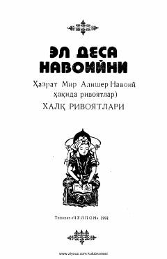

EDAlisher Navoiy haqidagi xalq rivoyatlari va afsonalari to'plami.
Ushbu to'plamga buyuk mutafakkir va shoir Alisher Navoiy haqida xalq orasida saqlanib qolgan rivoyat hamda afsonalar kiritilgan. Kitob buyuk bobokalonimiz tavalludining 550 yilligiga bag'ishlab tayyorlangan.